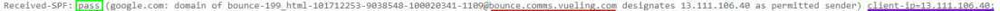
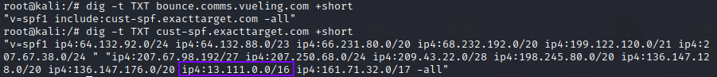
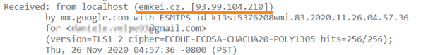

Sender Policy Framework (SPF)
Sender Policy Framework (SPF)
SPF prevent attacker(usually spammers) from spoofing their source email addresses and changing it
with a reputable address.
Creating an SPF record block spammers to use your domain. The SPF record will be
checked by other servers
A mail transfer agent(MTA) can perform a DNS lookup to verify this information before
accepting any mail.
An SPF record is a TXT record stored in the DNS zone file. A TXT record can contain
free-form or formatted text,however, an SPF record is written in a specific format.
To check if the source Ip address of an email is been spoofed1.
First we have to check the
metadata
of the email2. In particular check the header
Received-SPF  pass mean that
the recipient’s mail server (google.com) has checked and everything is in order
3. What we have to control is
that the
client-ip is the SPF record of the
domain
dig -t TXT bounce.comms.vueling.com +short
dig -t TXT cust-spf.exacttarget.com +short
 YES
verified!
Domain Keys Identified Mail (DKIM) and Domain-based Message Authentication, Reporting, and
Conformance (DMARC) are additional technologies that work with Public Key Infrastructure (PKI) to prevent phishing
attacks by adding authentication that an email originated from a target domain
Vulnerability:
1. First we have to check that a domain have a Mail Server(MX) otherwise means that is not used for
emails
dig -t mx dell.com +short
3. Check SPF record
1) To check spf record is possible use
https://www.kitterman.com/ or dig
dig -t txt dell.com | grep v=spf1
2) To test if an spf record is valid we can use
https://www.kitterman.com/2. forge fake email using
https://emkei.cz/ , set the domain of the email equal to the domain of the
target
If we use this or any public website to forge fake email, the emails will be marked anyway as spam
because received from the MTA emkei.cz that usually is associated with fake emails

4. A mail server could be vulnerable if it
use ?all or +all instead of -all. Or could be vulnerable if it not use “all” at all
If the email does not go
in the spam folder, the mail server is vulnerable because the TXT record is malformed
◇ Temporary email like
https://getnada.com/ should anyway receive fake emails because they are not
filtered
◇ Gmail will put spam email in the SPAM folder
Bibliography:
• https://www.pair.com/support/kb/what-is-an-spf/